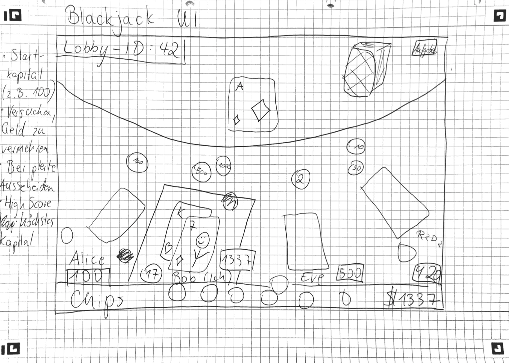
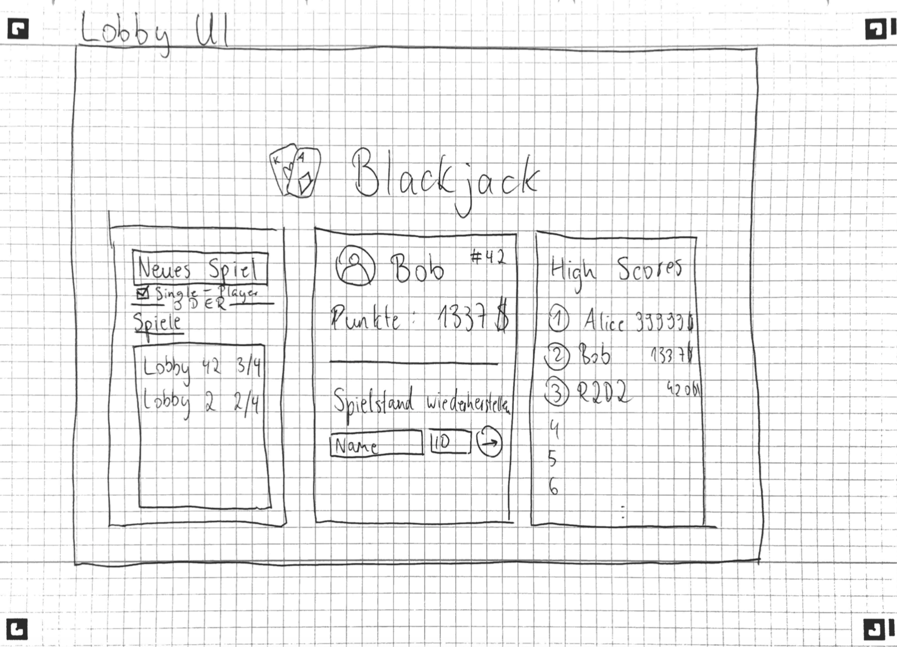

Table of Contents
In the first meeting we decided to implement our Blackjack game according the official rules defined by Bicycle [https://bicyclecards.com/how-to-play/blackjack/].
This basic project requirements where discussed:
Is it possible to join an ongoing game?
It is possible through the Lounge ID
Is it possible to exit an ongoing game?
It is possible through the give up/exit button.
If your credit is used, you will be ruled out.
How is the Highscore being managed?
The Highscore will be given to the player who has the highest credit at the end of a game session.
Highscore varries depending on the starting credit (? not clear yet)
Does a player have an identity outsid of a game?
The identity will be saved for multiple games during one session on the website.
Once the player leaves the website, his identity will be deleted and the next time he starts over with the inital credit of 100$.
It is not possible to take part in multiple games at the same time.
Based on this requirements we made a sketch of the Lobby-View and the In-game-View:
|  |
|  |
At the end of lecture the work was split into three. One part was implementing the background in svg, the next one was about the cards and the last part were the chips and the documentation. We set up a git repository in which everyone pushed their solutions.